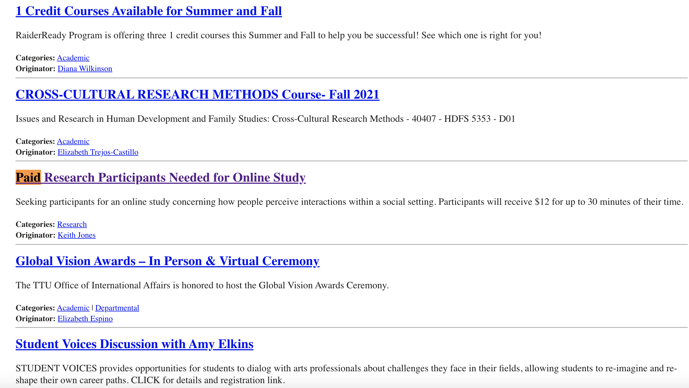
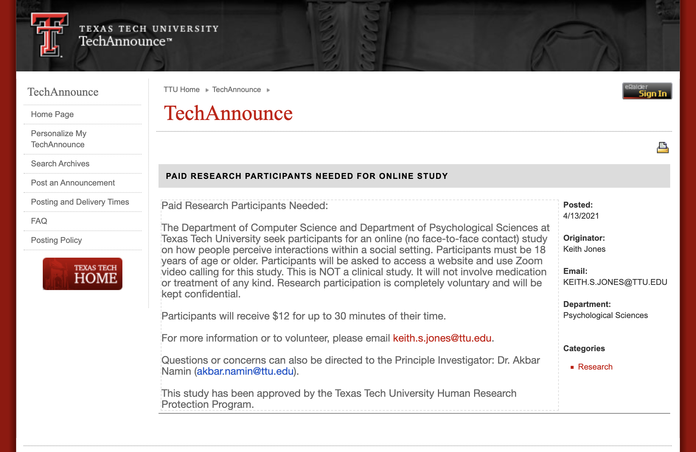

Evaluation Techniques
3 goals
- assess the extent of the system's functionality
- assess the effect of the interface on the user
- identify any specific problems with the system
Jonas Salk spent 98% of his time
documenting things that didn't work before he found the thing that
did
How evaluation is done depends on many factors
- novelty of project
- number of expected users
- criticality of the user interface
- costs of product and finances allocated for
testing
- time available
- experience of the design and evaluation team
Different types of Evaluation
Qualitative
Quantitative
Expert reviews
Usability Testing
- in the laboratory - controlled but may be unrealistic and
short term focus
- in the field - longer term, more realistic but harder to
control
- informal testing
- thinking aloud
- video and audio recording
- tends to emphasize first time usage and limited number of
features
- pilot studies are very important to find errors in the testing
procedure
- run through the entire experiment with a small group of
subjects
- participation should be voluntary and FULLY informed
- user should feel they are not being tested
- important to
collect data about the participant's background
- privacy of
records is very important
Surveys
Acceptance Tests
establish
specific testable criteria for the application:
time to learn, speed of usage, rate of errors


Controlled Experiments
- come up with a hypothesis that is testable and measurable
- set up an experiment where certain control variables are
varied
- subjects
- match expected users
- should have at least 10 subjects, in general more is better,
50-60 not uncommon
- usually you pay them for participating
We can also get a lot of information using eye-tracking
systems telling us where people are actually looking in addition
to mouse clicks and touches telling us where they are interacting.
and eye tracking is getting cheaper and more
available with gadgets like the Tobii
examples: https://www.youtube.com/watch?v=Rjha0nKbwnk
and https://www.youtube.com/watch?v=PId82ll7KrM
and also more and more data tracking users
positions, gestures, etc.
Video and Audio recording, especially when a subject is
speaking aloud, can be incredibly useful for finding interesting
subtle things.
Its very important to
treat your users / test subjects well
IRB (Institutional Review Board) issues
Cayuse IRB (TTU Human Studies Compliance)
and especially issues of informed consent
https://en.wikipedia.org/wiki/Informed_consent
Sources:
User Interface Design by Andrew Johnson
Information Anxiety by Saul Wurman
The Psychology of Human-Computer Interaction by Stuart Card
Designing the User Interface by Ben Schneiderman
Human-Computer Interaction by Mullet and Sano